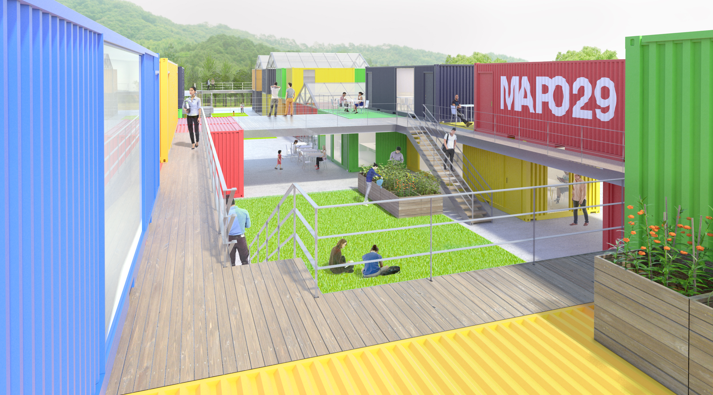
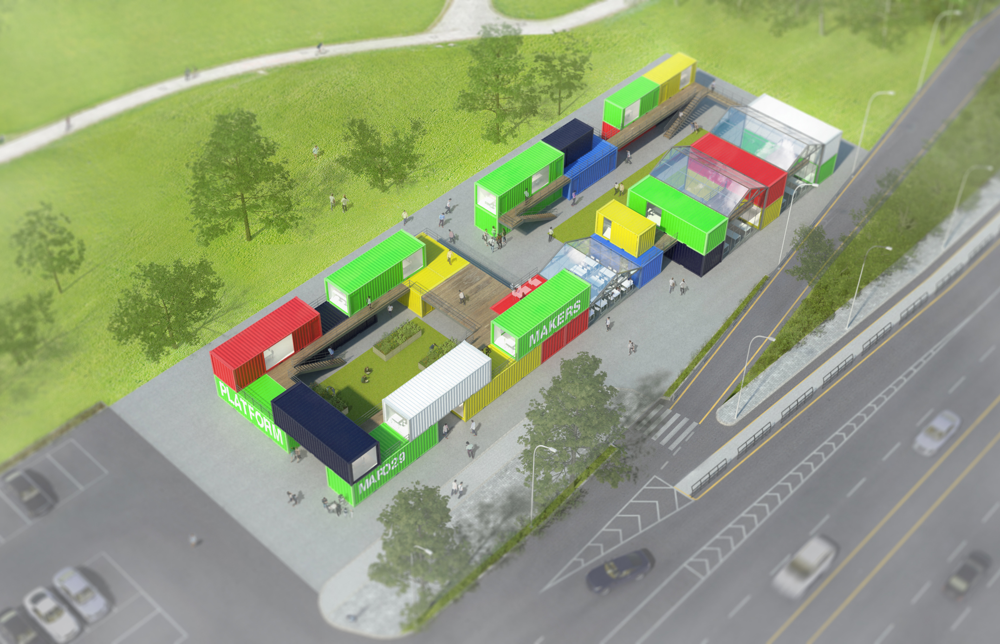

Near the newly renovated oil stockpile in Seoul, a community workshop was planned as a base camp for the Social Economy. This collective space is where small businesses provide services and goods for society and run their business.

Courtyards created by cargo container are the main spaces in this cluster. The courtyard is a boundary that divides private space and is a key language for long spaces.

Containers are mostly made from recycled materials, some from new containers. The sequence of spaces leading up to the courtyard, terrace and container provides a rich experience of the space.